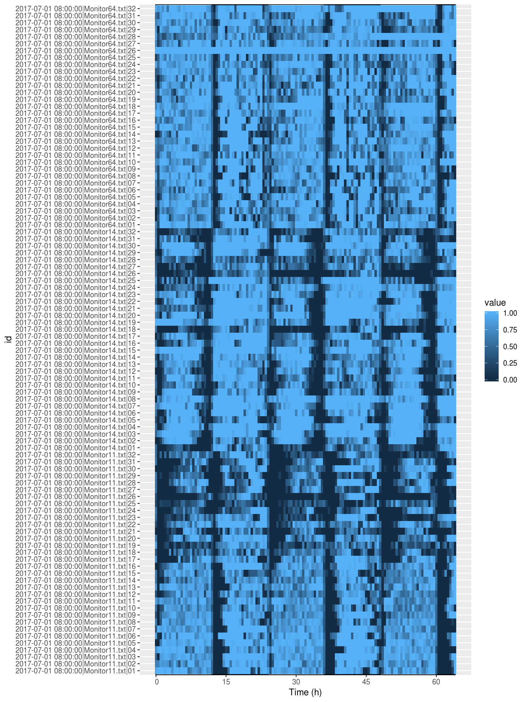
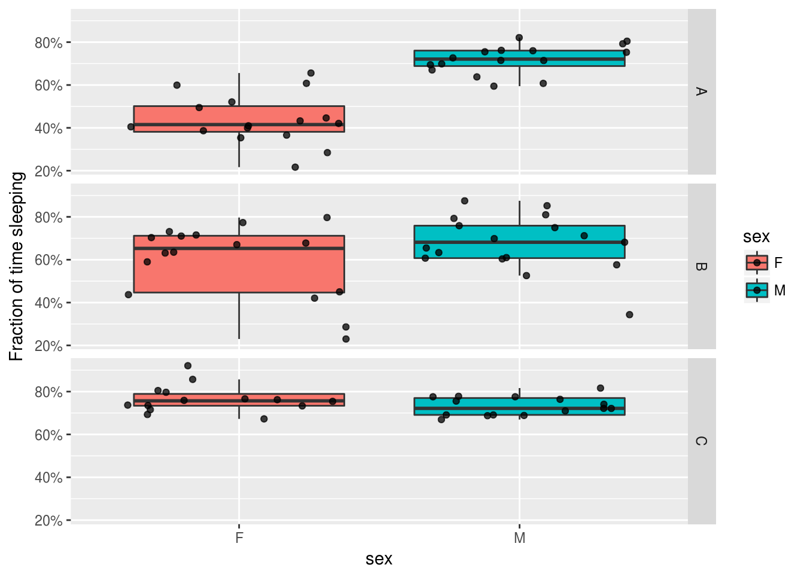

Sleep analysis
TODO

A DAM experiment. Two replicates, 10 days apart; three genotypes; two sexes, males and females
Aims
In this practical chapter, we will use a real experiment to learn how to:
- Annotate a behavr table with sleep state
- Use ggetho to display individual and population sleep amounts
- Compute average sleep within a time window
- Perform standard statistics on average sleep
- Analyse sleep architecture, sleep latency,…
Prerequisites
- You have read about behavr tables
- You are familiar with ggetho, our vidualisation tool
- You have already read the damr tutorial
- Ensure you have installed
behavr,damrandggethopackages:
Background
This tutorial focused on sleep in Drosophila. Traditionally, activity is first scored (e.g. beam crosses/video tracking), and any bout of inactivity longer than five minutes counts as sleep. You can easily adapt this tutorial to scoring other models/behaviours as long as you can define two discrete states (e.g. sleep vs asleep, moving vs immobile, left vs right, …).
In the DAM2 tutorial, we have learnt how to load data from a real DAM expriment. Since we already described it in length, it makes sense to use this experiment as an example for our sleep analysis. I will assume that you have already read and understood the DAM tutorial(). The last thing we did was loading data and annotating scoring sleep:
library(sleepr)
dt <- load_dam2(metadata, FUN = sleepr::sleep_dam_annotation)
dtGetting the data
Instead of going through the whole damr tutorial again, I though I would put the resulting data table online. Importanlty, for simplicity, I have just kept replicate 1. We just need to download it and load it:
library(sleepr)
library(ggetho)
load(url("https://github.com/rethomics/rethomics.github.io/raw/source/material/sleep_dam.RData"))
summary(dt)## behavr table with:
## 96 individuals
## 8 metavariables
## 4 variables
## 3.68736e+05 measurements
## 1 key (id)Data curation
First of all, lets visualise all our sleep data. It is important to pay critical attention to this graph in order to assess if anything has gone wrong:
ggetho(dt, aes(z=asleep)) +
stat_ld_annotations(height = 1)+
stat_tile_etho() 
Dead animals
Some animals may hae died during the experiment, but they could be scored as asleep for very long durations. sleepr has an utility function to remove data from dead animals:
# we give our curated data another name so we can see the difference
dt_curated <- curate_dead_animals(dt)
summary(dt_curated)## behavr table with:
## 95 individuals
## 8 metavariables
## 4 variables
## 3.57436e+05 measurements
## 1 key (id)As you can see, we now have 95 individuals vs 96 in the original data. To see whic animals have been removed, we could run something like:
setdiff(dt[, id, meta=T],
dt_curated[, id, meta=T])## [1] "2017-07-01 08:00:00|Monitor64.txt|26"Indeed, nothing seem to have happened in this channel. Now let’s look at the data after curation:
ggetho(dt_curated, aes(z=asleep)) +
stat_ld_annotations(ypos = "top")+
stat_tile_etho()  ### Animals that died too early {-} Now, we would like to remove animals that did not live say longer than 2 days. To do that, we use the power of
### Animals that died too early {-} Now, we would like to remove animals that did not live say longer than 2 days. To do that, we use the power of behavr tables:
# we make a summary table of all lifespan for each animals
lifespan_dt <- dt_curated[, .(lifespan = max(t)), by=id]
# we filter this table for lifespan>2 and we keep the id
valid_ids <- lifespan_dt[lifespan > days(2), id]
# we apply this filter
dt_curated <- dt_curated[id %in% valid_ids]
summary(dt_curated)## behavr table with:
## 94 individuals
## 8 metavariables
## 4 variables
## 3.54923e+05 measurements
## 1 key (id)Trimming
Generally, we want to remove point according the experimental time. For instance, we want to remove the begening as animals are acclimatising to their new environment. In general, we could simply do:
dt_curated <- dt_curated[t %between% c(0, days(2.5))]
summary(dt_curated)## behavr table with:
## 94 individuals
## 8 metavariables
## 4 variables
## 3.38494e+05 measurements
## 1 key (id)Which means we removed data before t=0 and after t=days(2.5).
Population plots
Now that we have curated our data, we can start looking at the biology. First, we make a global population plot:
ggetho(dt_curated, aes(y=asleep, colour=sex)) +
stat_pop_etho() +
stat_ld_annotations() +
facet_grid(genotype ~ .)
The y axis shows he proportion of time sent sleeping, averaged for each animal within a 30min (default) time window.
Then, we can wrap (average) that over one day. We also polish the y axis label:
ggetho(dt_curated, aes(y=asleep, colour=sex), time_wrap = hours(24)) +
stat_pop_etho() +
stat_ld_annotations() +
facet_grid(genotype ~ .) +
scale_y_continuous(name= "Fraction of time sleeping",labels = scales::percent)
That gives us a good understanding of what happens at the population level.
Summarise data per animal
Most likely, we want to summarise sleep amount so that we have one number per animal. For instance, we can compute the overall average proportion of time spent sleeping:
summary_dt <-
rejoin(dt_curated[,
.(
# this is where the computation happens
sleep_fraction = mean(asleep)
),
,by=id])
summary_dt## id file_info region_id
## 1: 2017-07-01 08:00:00|Monitor11.txt|01 <list> 1
## 2: 2017-07-01 08:00:00|Monitor11.txt|02 <list> 2
## 3: 2017-07-01 08:00:00|Monitor11.txt|03 <list> 3
## 4: 2017-07-01 08:00:00|Monitor11.txt|04 <list> 4
## 5: 2017-07-01 08:00:00|Monitor11.txt|05 <list> 5
## ---
## 90: 2017-07-01 08:00:00|Monitor64.txt|27 <list> 27
## 91: 2017-07-01 08:00:00|Monitor64.txt|29 <list> 29
## 92: 2017-07-01 08:00:00|Monitor64.txt|30 <list> 30
## 93: 2017-07-01 08:00:00|Monitor64.txt|31 <list> 31
## 94: 2017-07-01 08:00:00|Monitor64.txt|32 <list> 32
## experiment_id start_datetime stop_datetime
## 1: 2017-07-01 08:00:00|Monitor11.txt 2017-07-01 08:00:00 2017-07-04
## 2: 2017-07-01 08:00:00|Monitor11.txt 2017-07-01 08:00:00 2017-07-04
## 3: 2017-07-01 08:00:00|Monitor11.txt 2017-07-01 08:00:00 2017-07-04
## 4: 2017-07-01 08:00:00|Monitor11.txt 2017-07-01 08:00:00 2017-07-04
## 5: 2017-07-01 08:00:00|Monitor11.txt 2017-07-01 08:00:00 2017-07-04
## ---
## 90: 2017-07-01 08:00:00|Monitor64.txt 2017-07-01 08:00:00 2017-07-04
## 91: 2017-07-01 08:00:00|Monitor64.txt 2017-07-01 08:00:00 2017-07-04
## 92: 2017-07-01 08:00:00|Monitor64.txt 2017-07-01 08:00:00 2017-07-04
## 93: 2017-07-01 08:00:00|Monitor64.txt 2017-07-01 08:00:00 2017-07-04
## 94: 2017-07-01 08:00:00|Monitor64.txt 2017-07-01 08:00:00 2017-07-04
## sex genotype replicate sleep_fraction
## 1: M A 1 0.7600666
## 2: M A 1 0.7550680
## 3: M A 1 0.8214385
## 4: M A 1 0.7528464
## 5: M A 1 0.8044988
## ---
## 90: F C 1 0.7661761
## 91: F C 1 0.6725909
## 92: F C 1 0.7622883
## 93: F C 1 0.7967231
## 94: F C 1 0.9208553With rejoin, we have put our summary and metadata together, which is suitable for standars graphics/statictics. For instance:
ggplot(summary_dt, aes(x=sex, y=sleep_fraction, fill=sex)) +
geom_boxplot(outlier.colour = NA) +
geom_jitter(alpha=.75) +
facet_grid( genotype ~ .) +
scale_y_continuous(name= "Fraction of time sleeping",labels = scales::percent)
TODO
Next steps
- TODO